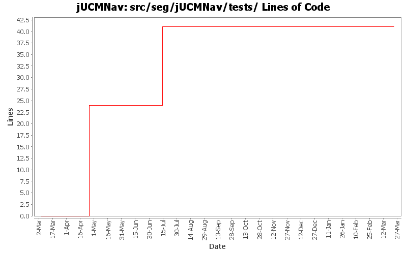

Summary Period: 2005-03-04 to 2006-03-23
[root]/src/seg/jUCMNav/tests
 commands
(3 files, 1753 lines)
commands
(3 files, 1753 lines)
 progress
(2 files, 2205 lines)
progress
(2 files, 2205 lines)

Total Lines Of Code:
41 (2006-03-31 18:01)
| Author | Changes | Lines of Code | Lines per Change |
|---|---|---|---|
| Totals | 11 (100.0%) | 89 (100.0%) | 8.0 |
| jpdaigle | 4 (36.4%) | 48 (53.9%) | 12.0 |
| etremblay | 4 (36.4%) | 24 (27.0%) | 6.0 |
| jkealey | 2 (18.2%) | 17 (19.1%) | 8.5 |
| jfroy | 1 (9.1%) | 0 (0.0%) | 0.0 |
Created command test cases for GRL
Fixed bug when saving Evaluation and LinkRef
0 lines of code changed in:
added headers + package.html for all files in the seg.jUCMNav.views.* package. did not clean the files
17 lines of code changed in:
Cleaned/commented seg.jUCMNav.model.commands.delete, except for most of the hard ones: DeleteMultiNodeCommand, DeletePathCommand, DeletePluginCommand, DeleteStartNCEndCommand;
Created new command tests.
Added headers in seg.jUMCNav.tests.*
0 lines of code changed in:
Re-adding. This should have worked last time.
24 lines of code changed in:
removed
0 lines of code changed in:
Recreating tests as LOWERCASE directory
24 lines of code changed in:
removing directory Tests to recreate it
0 lines of code changed in:
Refactored a lot of packages to better reflect our strategy for the future.
Corrected some bugs to follow some guidelines we defined earlier.
Extracted the RessourceTracker class from UCMEditor.
24 lines of code changed in:
- The new model is now working.
- Creating path works (do/undo)
- Extending path works (do/undo)
- SplitLinkCommand doesn't work
- BSplineConnectionRouter works #1!
0 lines of code changed in:
TODO list is now up to date.
0 lines of code changed in:
You can now add a node on the curve and the connection router will update accordingly.
0 lines of code changed in:
Generated by StatCVS 0.2.4